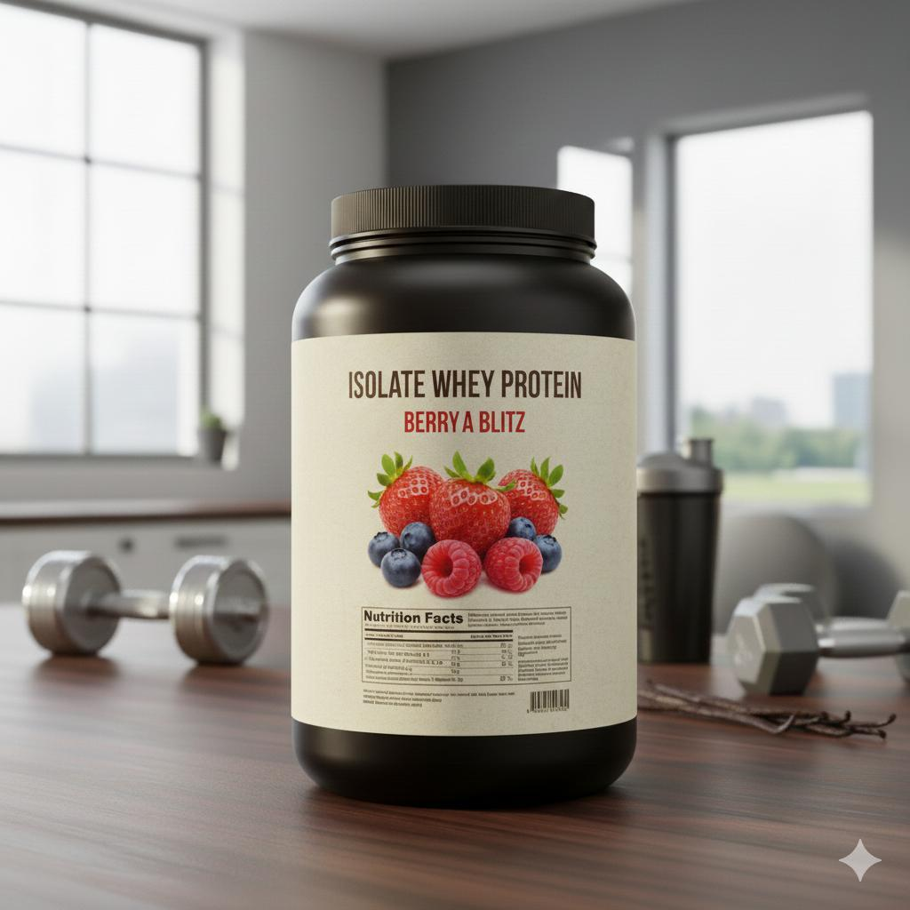

İzole Whey Protein %90 Saflık & Sıfır Şeker
Fazlalıklardan arınmış, sadece kaslarınızın ihtiyacı olan saf güç.
Gelişmiş CFM (Cross-Flow Microfiltration) teknolojisi ile yağ ve laktozdan tamamen arındırılmıştır. Standart Whey proteinlere göre çok daha hızlı emilir ve kaslara saniyeler içinde ulaşır. Özellikle diyet (definasyon) dönemindeki sporcular ve laktoz intoleransı olanlar için mükemmel tercihtir.
Ürün Avantajları
nutrition Besin Değerleri (Saf Performans)
| Besin Öğesi | 1 Ölçek (30g) | 100g İçin |
|---|---|---|
| Enerji | 108 kcal | 360 kcal |
| Protein | 27 g | 90 g |
| Karbonhidrat | < 0.5 g | 1.5 g |
| - Şeker | 0 g | 0 g |
| Yağ | 0.2 g | 0.6 g |
| BCAA (Toplam) | 6.2 g | 20.6 g |
schedule Kullanım Zamanı
Antrenman Sonrası (Kritik): Emilimi çok hızlı olduğu için antrenman biter bitmez (ilk 30 dk içinde) tüketilmesi en verimli sonuçları verir.
Sabah Kalkınca: Gece boyunca aç kalan kasları hızla beslemek için sabah aç karnına da kullanılabilir.
info Sadece Su İle
İzole proteinin en büyük özelliği hızlı emilimidir. Süt, sindirimi yavaşlatacağı için bu ürünü sadece su ile tüketmeniz, ürünün potansiyelini maksimize eder.